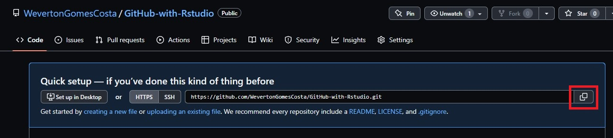
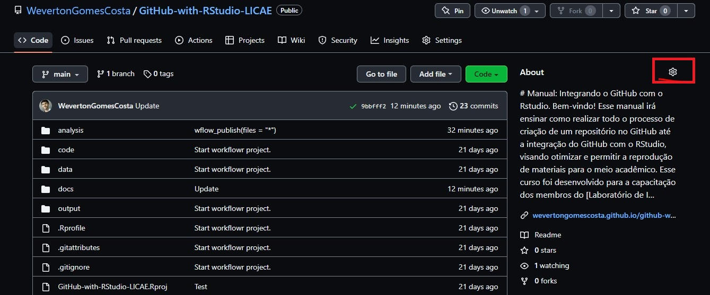

Tutorial
Costa, W. G.
2022-08-12
Last updated: 2022-08-12
Checks: 7 0
Knit directory: GitHub-with-RStudio-LICAE/
This reproducible R Markdown analysis was created with workflowr (version 1.7.0). The Checks tab describes the reproducibility checks that were applied when the results were created. The Past versions tab lists the development history.
Great! Since the R Markdown file has been committed to the Git repository, you know the exact version of the code that produced these results.
Great job! The global environment was empty. Objects defined in the global environment can affect the analysis in your R Markdown file in unknown ways. For reproduciblity it’s best to always run the code in an empty environment.
The command set.seed(20220715) was run prior to running
the code in the R Markdown file. Setting a seed ensures that any results
that rely on randomness, e.g. subsampling or permutations, are
reproducible.
Great job! Recording the operating system, R version, and package versions is critical for reproducibility.
Nice! There were no cached chunks for this analysis, so you can be confident that you successfully produced the results during this run.
Great job! Using relative paths to the files within your workflowr project makes it easier to run your code on other machines.
Great! You are using Git for version control. Tracking code development and connecting the code version to the results is critical for reproducibility.
The results in this page were generated with repository version d999186. See the Past versions tab to see a history of the changes made to the R Markdown and HTML files.
Note that you need to be careful to ensure that all relevant files for
the analysis have been committed to Git prior to generating the results
(you can use wflow_publish or
wflow_git_commit). workflowr only checks the R Markdown
file, but you know if there are other scripts or data files that it
depends on. Below is the status of the Git repository when the results
were generated:
Ignored files:
Ignored: .Rproj.user/
Unstaged changes:
Modified: analysis/_site.yml
Note that any generated files, e.g. HTML, png, CSS, etc., are not included in this status report because it is ok for generated content to have uncommitted changes.
These are the previous versions of the repository in which changes were
made to the R Markdown (analysis/index.Rmd) and HTML
(docs/index.html) files. If you’ve configured a remote Git
repository (see ?wflow_git_remote), click on the hyperlinks
in the table below to view the files as they were in that past version.
| File | Version | Author | Date | Message |
|---|---|---|---|---|
| Rmd | 512947f | WevertonGomesCosta | 2022-08-12 | Update |
| Rmd | 7bf6676 | WevertonGomesCosta | 2022-08-06 | Update |
| html | 7bf6676 | WevertonGomesCosta | 2022-08-06 | Update |
| Rmd | 281959a | WevertonGomesCosta | 2022-08-06 | Update |
| Rmd | b1c0b81 | WevertonGomesCosta | 2022-08-06 | Update |
| html | ed5cd8f | WevertonGomesCosta | 2022-08-06 | Update |
| Rmd | dee1cc1 | WevertonGomesCosta | 2022-08-06 | Update |
| html | c4ace77 | WevertonGomesCosta | 2022-08-06 | Build site. |
| Rmd | 36de952 | WevertonGomesCosta | 2022-08-06 | wflow_publish(files = "*") |
| html | 1818ae7 | WevertonGomesCosta | 2022-08-06 | wflow_publish(files = "*") |
| html | b47e9f4 | WevertonGomesCosta | 2022-08-06 | wflow_git_commit(files = "*") |
| Rmd | f30aaec | WevertonGomesCosta | 2022-08-06 | Update |
| Rmd | eede0fa | WevertonGomesCosta | 2022-08-05 | Update |
| html | eede0fa | WevertonGomesCosta | 2022-08-05 | Update |
| Rmd | ff96afc | WevertonGomesCosta | 2022-08-05 | Update |
| Rmd | 6472b7a | WevertonGomesCosta | 2022-08-05 | Update |
| html | 1b5d114 | WevertonGomesCosta | 2022-08-05 | Build site. |
| Rmd | 9a29001 | WevertonGomesCosta | 2022-08-05 | wflow_publish(files = "*") |
| html | 9a29001 | WevertonGomesCosta | 2022-08-05 | wflow_publish(files = "*") |
| html | 2bf7af9 | WevertonGomesCosta | 2022-08-05 | Build site. |
| Rmd | fde81fc | WevertonGomesCosta | 2022-08-05 | wflow_publish(files = "*") |
| html | f9a57b0 | WevertonGomesCosta | 2022-08-05 | Build site. |
| Rmd | cd7dbb6 | WevertonGomesCosta | 2022-08-05 | wflow_publish(files = "*") |
| html | cd7dbb6 | WevertonGomesCosta | 2022-08-05 | wflow_publish(files = "*") |
| Rmd | 476a131 | WevertonGomesCosta | 2022-07-20 | Test |
| html | 476a131 | WevertonGomesCosta | 2022-07-20 | Test |
| Rmd | 28240af | WevertonGomesCosta | 2022-07-19 | test |
| html | 28240af | WevertonGomesCosta | 2022-07-19 | test |
| Rmd | ba2be51 | WevertonGomesCosta | 2022-07-19 | Translate |
| html | ba2be51 | WevertonGomesCosta | 2022-07-19 | Translate |
| html | d5e4b38 | WevertonGomesCosta | 2022-07-15 | Test |
| html | 8494a02 | WevertonGomesCosta | 2022-07-15 | Test |
| html | 395c921 | WevertonGomesCosta | 2022-07-15 | Test |
| html | a89fef3 | WevertonGomesCosta | 2022-07-15 | Test |
| html | cf2d164 | WevertonGomesCosta | 2022-07-15 | Build site. |
| html | a5144d5 | WevertonGomesCosta | 2022-07-15 | Build site. |
| Rmd | 21453a7 | WevertonGomesCosta | 2022-07-15 | Test |
| html | 21453a7 | WevertonGomesCosta | 2022-07-15 | Test |
| html | 4786c4d | WevertonGomesCosta | 2022-07-15 | Atualized |
| Rmd | 3f5b51c | WevertonGomesCosta | 2022-07-15 | Atualized |
| html | 3f5b51c | WevertonGomesCosta | 2022-07-15 | Atualized |
| html | 3623333 | WevertonGomesCosta | 2022-07-15 | Atualized |
| Rmd | e99dbf2 | WevertonGomesCosta | 2022-07-15 | Start workflowr project. |
Crie um projeto
Crie um repositório GitHub
Para evitar qualquer conflito entre o RStudio e o GitHub, vamos criar seu repositório primeiro no GitHub.
Acesse sua página do GitHub para criar um novo repositório.
Adicione um nome criativo e uma descrição ao seu repositório, deixe
como opção pública, que permitirá que você crie uma página no GitHub
para compartilhar seu trabalho com todos nós. Para criar o repositório
basta clicar no botão verde no final da página
Create repository.
Depois disso vamos copiar o https::/link do seu
repositório para cloná-lo com o RStudio. Basta clicar no botão
vermelho.

Agora vamos para o RStudio.
Para clonar (Baixar) seu repositório do GitHub, clique no botão
Project (None) no canto superior direito do RStudio e
depois em New Project....
Uma janela chamada New Project Wizard aparecerá,
selecione Version Control, e depois Git.

Isso abrirá uma janela com o Clone Git Repository. Aqui
você vai apenas colar aquele link que eu pedi para você copiar há muito
tempo na janela Repository URL:. Em
Create project as subdirectory of: selecione um diretório
de fácil acesso para você, que facilitará sua localização
posteriormente.
Eu sugiro que você crie uma pasta em seus Documents
para manter seus projetos workflow organizados.
Crie um projeto workflow
O pacote workflowr ajuda você a organizar uma análise
visando melhorar o gerenciamento do projeto, a reprodutibilidade e o
trabalho em equipe. Funciona com o software de controle de versão git. O
Git é outro software incrível que funciona como um controle de versão,
salvando todas as alterações em seu projeto que você faz durante o
caminho, permitindo voltar facilmente para versões mais antigas ou
rastrear suas alterações ou bugs.
Então vamos começar a instalar o pacote workflowr
install.packages("workflowr")Iniciando seu projeto de workflow
Vamos começar a ler o pacote workflowr, e então executar
sua função
library(workflowr)
wflow_git_config(user.name = "YourGitHubUserName", user.email = "YourGitHubEmail")A função wflow_git_config salvará suas informações de
nome de usuário e e-mail vinculados à sua conta do GitHub. Isso será
necessário para permitir que você envie todas as suas alterações em seu
projeto. Esta configuração só será necessária uma vez por
computador.
Agora vamos criar a estrutura de diretório workflowr com
a função wflow_start. Você já tem um diretório
principal para o seu projeto, basta copiá-lo e colar aqui.
wflow_start(directory = ".",
name = "YourRepositoryName",
git = TRUE,
existing = TRUE)Obs.:
O ponto
.representa seu diretório de trabalho. Está dizendo aoworkflowrpara criar as novas pastas em seu diretório de trabalho, não em uma nova pasta.Use o mesmo
namepara seu projeto e para seu repositório GitHub.Os argumentos
giteexistinginformam para oworkflowrque você usará o git como controle de versão e que a pasta já existe, respectivamente.
wflow_start fornecerá o seguinte modelo de
subdiretórios:
meu projeto/
|-- .gitignore
|-- .Rprofile
|-- _workflowr.yml
|-- analysis/ # Esta é a pasta mais importante,
| | ele armazenará todo o seu markdown R e
| | arquivos com sua análise deste projeto
| |-- about.Rmd
| |-- index.Rmd # Este arquivo Rmd irá gerar a página inicial do seu
| | local na rede Internet. Aqui você pode escrever mais sobre o
| | projeto e vinculá-lo aos seus arquivos Rmd com
| | sua análise
| |-- license.Rmd
| \-- _site.yml # Este arquivo é o que faz toda a mágica do seu site
| layout, tema, barra de navegação, ...
|-- code/ # Nesta pasta você deve armazenar todo o código que achar
| | que pode não ser apropriado para incluir em seus arquivos Rmd
| | ou são funções que você criou que você apenas chamará
| | para a análise usando uma função de origem.
| \-- README.md
|-- data/ # Aqui você adicionará todos os seus arquivos de dados brutos.
| \-- README.md
|-- docs/ # Esta pasta irá salvar todas as páginas html criadas a partir do seu Rmd
| arquivos, NÃO DEVEM SER EDITADOS PELO USUÁRIO
|-- meuprojeto.Rproj
|-- output/ # Aqui você salvará toda a saída da sua análise,
| | como dados, resultados, números,...
| | Mesmo os arquivos de dados de pré-processamento devem ser salvos aqui.
| \-- README.md
|-- README.mdExemplo no computador
workflowr também fornece um formato de modelo para seus
arquivos Rmd que podem ser usados para criar seus sites de páginas do
GitHub como este!!!
Você pode ver mais ideias de como personalizar o tema e o layout do site do seu projeto aqui.
Funções do Tidyverse
Existem muitos ótimos recursos online para aprender as
funções básicas do tidyverse. Aqui você
encontrará muitas dicas do maravilhoso mundo do tidyverse e
muito mais.
Code chunks
Nos arquivos R markdown, seu código R deve estar dentro de um
code chunks para que o RStudio entenda como tal. Então, o
que é um pedaço de código?
aqui está um ```r dim(iris)[1] 150 5```
mas você também pode usar isso no meio de qualquer frase como
2 + 2 é = 4, tudo que você precisa fazer é escrever seu
código cercado por um par de aspas simples e a letra r
assim.
# Dois mais dois é igual a `r 2 + 2`R markdown permite que você crie chuncks
para várias linguagens de programação, como python, c++…
No seu RStudio existe um botão +c no menu abaixo do nome
do seu arquivo Rmd, experimente para ver que outro tipo de linguagem
você pode aplicar em um arquivo Rmd.

Usando Rmarkdown
Aqui estão alguns guias para melhorar sua escrita Rmd. Você pode usar cabeçalhos, dar ênfase, criar tabelas, chamar uma figura, adicionar links de sites úteis.
- Sintaxe básica do Markdown
- Guia de referência R Markdown - do RStudio.
Usando workflowr
Vamos abrir o arquivo index.Rmd usando a função
wflow_open
wflow_open("analysis/index.Rmd")Uma guia do R Markdown irá ser aberta no RStudio.
Neste arquivo você pode atualizar o título da página de índice e começar a escrever os principais objetivos deste repositório. Como:
Este repositório foi criado para auxiliar minha experiência de aprendizado e integração do GitHub com o RStudio usando o workflowr.
Meu primeiro código R neste projeto será nesta [página do hub do git](index.html)Também é possível criar scrips usando a função
wflow_open. Vamos criar um arquivo chamado
PCA.Rmd.
wflow_open("analysis/PCA.Rmd")Isso deve criar o arquivo PCA.Rmd e abri-lo em outra
guia do Rstudio.
O arquivo PCA.Rmd já está salvo em nossa pasta
analysis.
Você pode atualizar o nome para substituir a abreviação
PCA para Análise de Componentes Principais e
adicionar uma nova introdução para a análise que faremos irá fazer nesse
arquivo R markdown.
Você pode seguir o exemplo deste site PCAExample.
Como já temos algumas mudanças em nosso projeto, podemos atualizar
nosso repositório no GitHub rodando o wflow_status e o
wflow_publish.
wflow_statusverificará se há alguma alteração nos arquivos da pastaanalysisque requer a criação das páginas html novamente, e verificará quaisquer arquivos novos/excluídos/modificados em seu repositório. Sempre comparando com a última versão (commit).wflow_publishirá confirmar (salvar, tirar um snpashot) as mudanças nos arquivos Rmd na pastaanalysis. Em seguida, crie ou atualize os arquivos e figuras html e confirme esses novos arquivos e figuras html novamente.
wflow_status()Você deve ver algo assim.
Status of 4 Rmd files
Totals:
3 Unpublished
1 Scratch
The following Rmd files require attention:
Unp analysis/about.Rmd
Unp analysis/index.Rmd
Unp analysis/license.Rmd
Scr analysis/PCA.Rmd
Key: Unp = Unpublished, Scr = Scratch (Untracked)
The current Git status is:
status substatus file
untracked untracked .DS_Store
untracked untracked 2.1 Script Var BLUPs.R
untracked untracked Data_Crosses_Density_chart.txt
untracked untracked Parentais selecionados.xlsxPara publicar seu site html usando wflow_publish você
precisará fornecer uma pequena mensagem que será vinculada à função
git commit.
wflow_publish(files = "analysis/*.Rmd", mensagem = "Test")Current working directory: /Users/USUARIO/Documents/GitHub/GitHub-with-RStudio-LICAE
Building 3 file(s):
Building analysis/about.Rmd
log directory created: /var/folders/33/g0c9br3d0rx_bvhf9jsc0t9mcdw1j5/T//RtmphiTKma/workflowr
Building analysis/index.Rmd
Building analysis/license.Rmd
Summary from wflow_publish
**Step 1: Commit analysis files**
No files to commit
**Step 2: Build HTML files**
Summary from wflow_build
Settings:
combine: "or" clean_fig_files: TRUE
The following were built externally each in their own fresh R session:
docs/about.html
docs/index.html
docs/license.html
Log files saved in /var/folders/33/g0c9br3d0rx_bvhf9jsc0t9mcdw1j5/T//RtmphiTKma/workflowr
**Step 3: Commit HTML files**
Summary from wflow_git_commit
The following was run:
$ git add docs/about.html docs/index.html docs/license.html docs/figure/about.Rmd docs/figure/index.Rmd docs/figure/license.Rmd docs/site_libs docs/.nojekyll
$ git commit -m "Build site."
The following file(s) were included in commit 96ce162:
docs/about.html
docs/index.html
docs/license.htmlNo entanto, prefiro criar/atualizar os arquivos html usando o botão
Knit e submeeter. Essa estratégia reduz o número de commits
em seu repositório, o que facilita encontrar uma versão mais antiga
dele. Além disso, o botão Knit permite que você veja se seu
site tem a configuração que você esperava sem precisar confirmar cada
vez que você recriar seu site.
Você pode pedir ao RStudio para criar seu site html
pressionando o botão knit, conforme mostrado abaixo.
O RStudio criará/atualizará seu arquivo html e o salvará
na pasta docs. Depois de repetir esta etapa para todos os
seus arquivos Rmd e verificar se todos estão conforme o esperado, você
pode confirmar essas alterações no GitHub. Veja a próxima seção.
Usando o Git para salvar suas atualizações no GitHub
O Git tem quatro funções principais:
- clone: irá copiar seu repositório para um diretório específico em seu computador.
- pull: irá atualizar o repositório clonado do seu computador com as novas atualizações no seu repositório GitHub.
- commit: irá salvar uma versão do seu repositório com seus novos códigos, arquivos, saídas. Mas isso não o enviará para o GitHub.
- push: enviará para o git hub todos os seus novos commits/atualizações no projeto. Depois de enviar seu repositório para o GitHub, você pode compartilhar ou clonar suas atualizações em qualquer computador.
Para uma boa prática de commit, apenas comite suas atualizações depois de terminar seu trabalho ou parte do projeto, assim você reduzirá o número de commits em seu projeto.
Git no RStudio
O Git possui um menu próprio para facilitar a interação entre o GitHub e o RStudio.
Para fazer o commit das atualizações clique em
Commit

Isso abrirá uma janela chamada
Rstudio: Review Changes.
Nesta janela, você terá permissão para stage (confirmar)
as alterações que você fez em todos os arquivos. Você pode tomar esta
decisão por chunk, você só tem que decidir se você
stage chunk (manter as alterações) ou
discard chunk (manter o arquivo como estava no último
commit).
Para confirmar suas atualizações, siga as estapas: 1. Selecione todas
as alterações que deseja atualizar, 2. Insera uma mensagem de commit em
Commit message no lado superior da janela 3. Clique em
commit Commit.
Isso irá abrir uma nova janela do Git Commit com a
descrição de todos os arquivos que foram atualizados.
Agora feche essa janela clicando em Close na parte
superior direita. Você verá que todas ou quase todas as atualizações
foram realizadas.
Para enviar seu novo commit para o GitHub, basta clicar na seta verde
na parte superior da janela (Push).
Isso irá abrir uma nova janela do Git Push com a
descrição de todos os arquivos que foram enviados para o GitHub. Será
apresentado algo como na imagem abaixo.
Um modo mais fácil de realizar a publicação de todas as
atualizações de uma vez é usando wflow_publish. Assim todas
as suas atualizações serão “commitadas” e enviadas para o GitHub, sem
todo aquele processo anterior.
Se for a primeira vez que você envia um commit para o GitHub em seu
computador, o RStudio pedirá seu usuário do GitHub e uma
senha, a senha que você deve fornecer é um
token de acesso pessoal. Este link
fornecerá o que você precisa fazer para gerar um.
Lembre-se de guardar este token em um lugar seguro, ele pode ser usado em outra ocasião.
Publicando no GitHub (Páginas)
Ok, seu projeto já está no GitHub, mas agora precisamos dar instruções para construir seu site no GitHub, então vamos ao seu repositório GitHub. Link do GitHub
Selecione o repositório que criamos. No site do seu repositório,
clique em settings
Em seguida, selecione a seção Pages no menu da barra
lateral 
Você verá uma seção sobre Source, o GitHub precisa saber
qual branch e qual pasta dentro deste branch estão seus arquivos html.
Então clique no botão None e selecione
Branch: main, então nas novas janelas com um símbolo de
pasta selecione a pasta /docs e salve.
Parabéns seu site será criado, aguarde alguns minutos. O link aparecerá em uma janela semelhante a esta.
® Seu site está pronto para ser publicado em
https://YourUserName.github.io/YourRepositoryName/Copie este link e volte ao site do seu repositório clicando no nome do seu repositório.
UserName/RepositoryNameNo lado direito da página terá uma seção chamada About
com uma engrenagem, clique na engrenagem e
cole o link do seu site na janela Website, e salve as
alterações.

Agora, todos que têm acesso ao seu repositório podem ver o site do
seu projeto apenas clicando no link fornecido na seção
About.
sessionInfo()R version 4.1.3 (2022-03-10)
Platform: x86_64-w64-mingw32/x64 (64-bit)
Running under: Windows 10 x64 (build 19042)
Matrix products: default
locale:
[1] LC_COLLATE=Portuguese_Brazil.1252 LC_CTYPE=Portuguese_Brazil.1252
[3] LC_MONETARY=Portuguese_Brazil.1252 LC_NUMERIC=C
[5] LC_TIME=Portuguese_Brazil.1252
attached base packages:
[1] stats graphics grDevices utils datasets methods base
loaded via a namespace (and not attached):
[1] Rcpp_1.0.9 rstudioapi_0.13 whisker_0.4 knitr_1.39
[5] magrittr_2.0.3 workflowr_1.7.0 R6_2.5.1 rlang_1.0.4
[9] fastmap_1.1.0 fansi_1.0.3 stringr_1.4.0 tools_4.1.3
[13] xfun_0.31 utf8_1.2.2 cli_3.3.0 git2r_0.30.1
[17] jquerylib_0.1.4 htmltools_0.5.3 rprojroot_2.0.3 yaml_2.3.5
[21] digest_0.6.29 tibble_3.1.8 lifecycle_1.0.1 later_1.3.0
[25] sass_0.4.2 vctrs_0.4.1 promises_1.2.0.1 fs_1.5.2
[29] cachem_1.0.6 glue_1.6.2 evaluate_0.16 rmarkdown_2.14
[33] stringi_1.7.6 bslib_0.4.0 compiler_4.1.3 pillar_1.8.0
[37] jsonlite_1.8.0 httpuv_1.6.5 pkgconfig_2.0.3